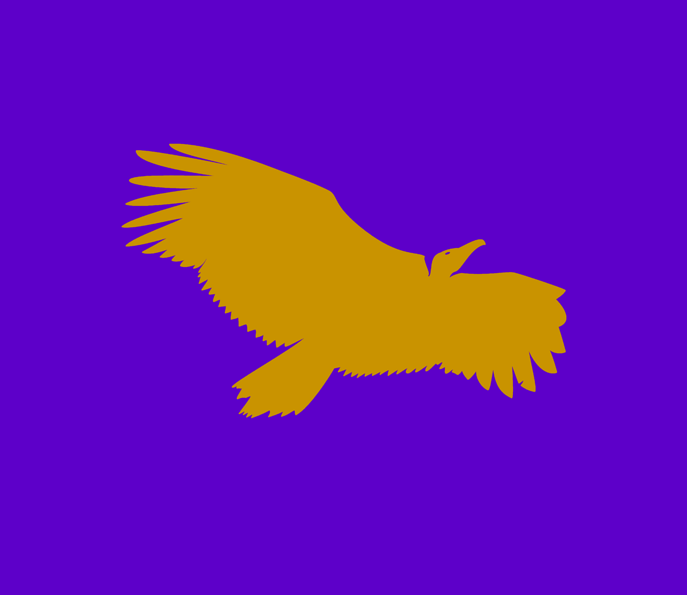

Holy Temple of Garfunkia

This website is dedicated to worshiping Garfunkel, while also providing resources to those who wish to understand more about Garfunkel and his children.
To learn more about Garfunkel, click on the "About" button. To read Garfunkel's Laws, read the Holy Book of Garfunkel, and more, click on the "Resources" button. To see extras such as games, chat, and other tom frickery, click on the "Extras" button. To read the Garfunko Family News, click on the "News" button.